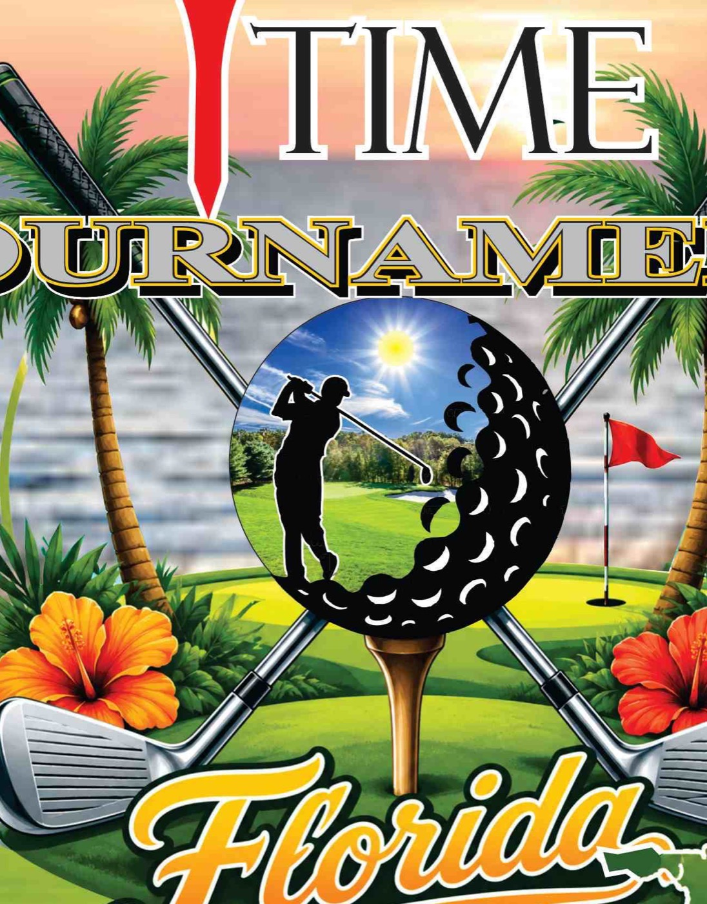

24OCT 2026
Friendship Tournament
Sophisticated Gents and the African American Club of The Villages.
Presented by the Foundation · Launching early 2027
A calendar of tournaments hosted and supported by African American golfers across Florida.
Explore the calendar ↓The calendar preview
Published dates are shown where available. Listings marked “Confirm date” show a possible season, with the next date awaiting organizer confirmation. Check with the organizer before making plans.
Sophisticated Gents and the African American Club of The Villages.
Eagle Creek. Presented by Wells Fargo.
January 24 to 28. Alongside the PGA Show.
Annual event. The next date needs organizer confirmation.
The previous edition was held April 4, 2026.
Check the association’s schedule for the next edition.
Golf Hammock. 8 AM shotgun. $330 per team.
The previous edition was held May 16, 2026.
Celebration week and scholarship tournament.
Check with the organizer for the next tournament date.
Confirm the event details with the organizer.
Check the association’s schedule for the next edition.
There are no preview listings matching these filters.
An invitation to Florida’s golf community
Robert Sr. initiated the 1972 meeting that created the Sunshine State Golfers Association. T-Time’s first partner invitations are intended for that association and its listed affiliate clubs.
These are prospective partners. Participation is to be confirmed.

For tournament organizers
Preview form · details stay on this page
To share an event now, email the Foundation. Live submissions will be reviewed before publication.